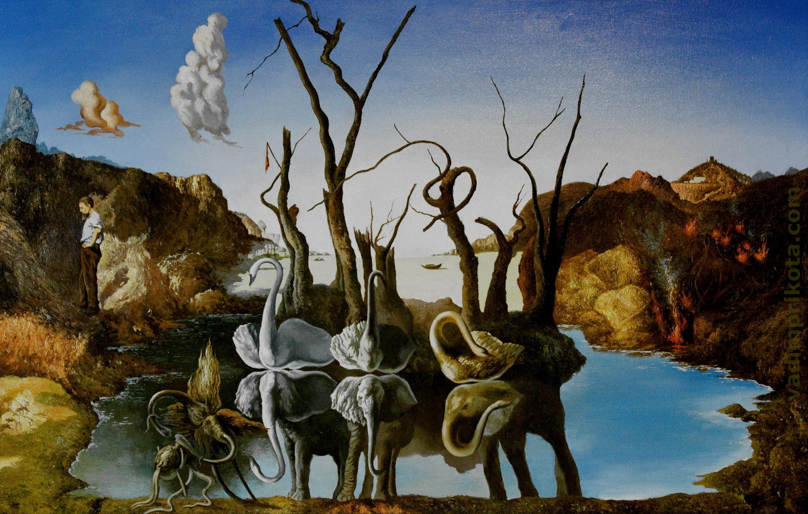

QueryLoader v2 demo page
This was a simple demo of what QueryLoader2 does: Giving a simple loading overlay before showing the webpage.
- 
-

- Gradient test
-
Non existant

This was a simple demo of what QueryLoader2 does: Giving a simple loading overlay before showing the webpage.